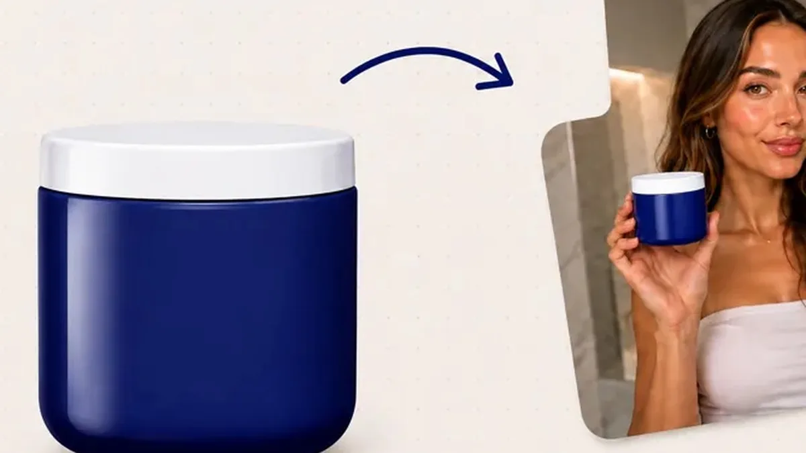

إعلانات فيديو UGC جديدة كل أسبوع، دون تصوير
لبائعي الدفع عند الاستلام في المغرب: صورة منتج واحدة، وإعلانا فيديو للاختبار.
بعد الفيديو، أجب عن سؤالين لتعرف الخطة المناسبة لك.
ماذا تريد أن تصنع أولاً؟
كم مرة تحتاج إلى فيديوهات جديدة؟
الدفع ببطاقة بنكية دولية. يمكنك الإلغاء في أي وقت.
من صورة المنتج إلى إعلان جاهز



الوجه نفسه في المقهى، وفي الشارع، وفي فيديو المنتج. مقدّم واحد لكل إعلانات متجرك.
أمثلة مولَّدة بالذكاء الاصطناعي باستخدام MakeInfluencer.
اصنع أول إعلان فيديو لمنتجكتكفيك صورة المنتج. واجهة التطبيق بالعربية.
هل تعرف هذه المشكلات؟
«الإعلان توقّف عن البيع، وأحتاج فيديو جديداً»
يملّ الجمهور من الفيديو نفسه بسرعة، خاصةً حين يكون الجمهور المستهدف صغيراً.
«أنتظر أياماً حتى يصلني الفيديو»
وأنت تريد إطلاق المنتج اليوم، لا الأسبوع القادم.
«صانع المحتوى مكلف لاختبار منتج واحد»
بين 300 و2,000 MAD للفيديو الواحد، قبل أن تعرف إن كان المنتج رابحاً.
«أحتاج افتتاحيات كثيرة بسرعة»
لتجد الزاوية الرابحة، تختبر عدة افتتاحيات. وكل نسخة تعني تصويراً جديداً.
مع MakeInfluencer، تصنع النسخة الجديدة بأرصدة خطتك، دون يوم تصوير ودون انتظار.
كيف تعمل الأداة؟ 3 خطوات
أنشئ مقدّمك مرة واحدة
شخصية خيالية بالذكاء الاصطناعي، بالوجه نفسه في كل إعلاناتك.
ارفع صورة المنتج
تحصل على فيديو توصية مدته 12 ثانية بنسختين لاختبار A/B، أو على حزمة صور إعلانية بأربعة مقاسات: 1:1 و4:5 و9:16 و16:9.
اختبر، واحتفظ بالرابح
ثبّت المقدّم، وغيّر عنصراً واحداً: الافتتاحية أو العرض أو المكان. ثم احتفظ بالنسخة الأفضل أداءً.
الخطط تبدأ من $39 في الشهر (≈ 385 MAD). إلغاء في أي وقت، دون رسوم.
قبل أن تبدأ
الدفع من المغرب
ببطاقة بنكية دولية بعد تفعيل التجارة الإلكترونية الدولية في تطبيق بنكك، أو ببطاقة بنكية باسم شركتك.
كل الأدوات في كل الخطط
المقدّم الناطق ومزامنة الشفاه وMovie Maker متاحة منذ خطة Creator. وتضيف Pro أرصدة أكثر ودقة 1080p و4K.
الإلغاء والاسترجاع
ألغِ في أي وقت، واسترجع مبلغ الأرصدة غير المستعملة خلال 30 يوماً من الدفع.
الأسعار
| الخطة | في الشهر | لمن؟ |
|---|---|---|
| Creator | $39 ≈ 385 MAD $31 شهرياً بالدفع السنوي | كل الأدوات، وفيديو بدقة 720p، و180,000 رصيد شهرياً. |
| Pro | $89 ≈ 880 MAD $71 شهرياً بالدفع السنوي | لفيديوهات جديدة كل أسبوع: 600,000 رصيد شهرياً، ودقة 1080p و4K، وشخصية مدرَّبة. |
الأسعار من makeinfluencer.ai/pricing بتاريخ 4 أكتوبر 2026. التحويل تقريبي (1$ ≈ 9.86 MAD) دون رسوم البنك. للوكالات: خطة Studio بسعر $199 شهرياً.
أسئلة شائعة
هل تناسب الأداة منتجات الدفع عند الاستلام (COD)؟
نعم. ارفع صورة المنتج، فيحمله المقدّم ويتحدث عنه، بنسختين لاختبار الافتتاحيات. ولعرض طريقة الاستعمال، ارفع أيضاً لقطاتك الخاصة للمنتج واجمعها مع المقدّم في الإعلان نفسه.
هل سيبدو الإعلان مصطنعاً؟
شاهد الأمثلة أعلاه واحكم بنفسك. تختار المقدّم والمكان والافتتاحية، وتحصل على نسختين في كل مرة، فتحتفظ بالأكثر إقناعاً.
ماذا أحتاج للبدء؟
صورة واضحة للمنتج، وبطاقة بنكية دولية. واجهة التطبيق متوفرة بالعربية والفرنسية والإنجليزية.
هل يتكلم المقدّم بالدارجة؟
نعم. نماذج الفيديو التي تولّد الصوت بنفسها، مثل Veo 3.1 وSeedance، تتبع اللغة واللكنة التي تكتبها في الوصف، مثلاً: «بالدارجة المغربية بلكنة الدار البيضاء». ويمكنك أيضاً رفع تسجيلك الخاص، فيحرّك المقدّم شفتيه وفقه، حتى 10 دقائق. ولِّد نسختين واحتفظ بالأكثر طبيعية.
هل أملك الفيديوهات، وهل أستعملها في الإعلانات الممولة؟
نعم. تقول MakeInfluencer إن ما تنتجه ملك لك، بحقوق تجارية كاملة ودون علامة مائية، على Facebook وInstagram وTikTok وغيرها.
هل تصلح الأداة لإعلانات التطبيقات أيضاً؟
نعم. لقطة شاشة وجملة تعريفية تتحولان إلى فيديو لمقدّم يعرض التطبيق على هاتفه، بنسختين.
إعلانك القادم لا ينتظر صانع محتوى
اصنع أول إعلان فيديو لمنتجكتكفيك صورة المنتج. إلغاء في أي وقت، واسترجاع الأرصدة غير المستعملة خلال 30 يوماً.